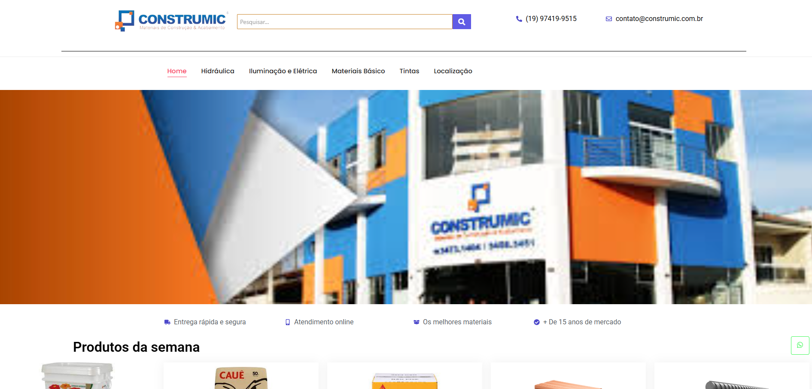
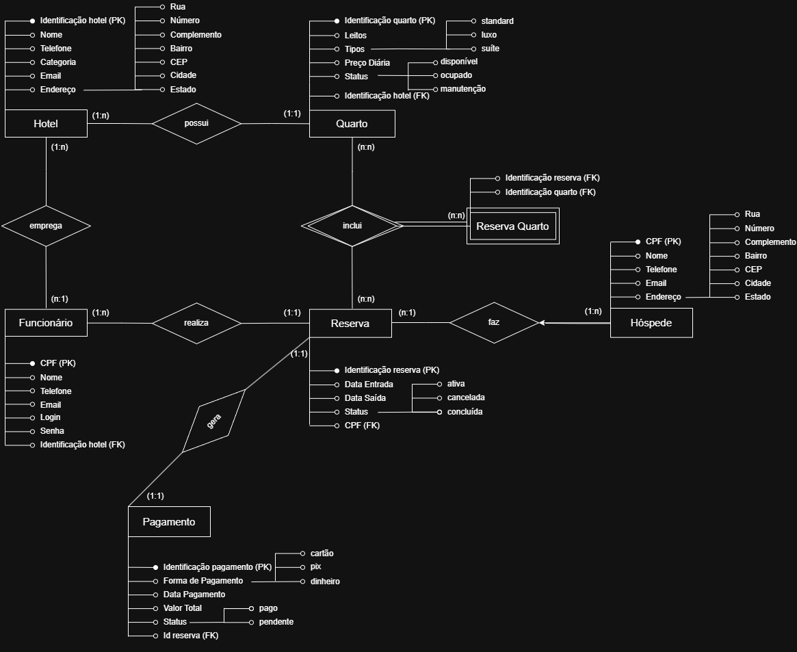
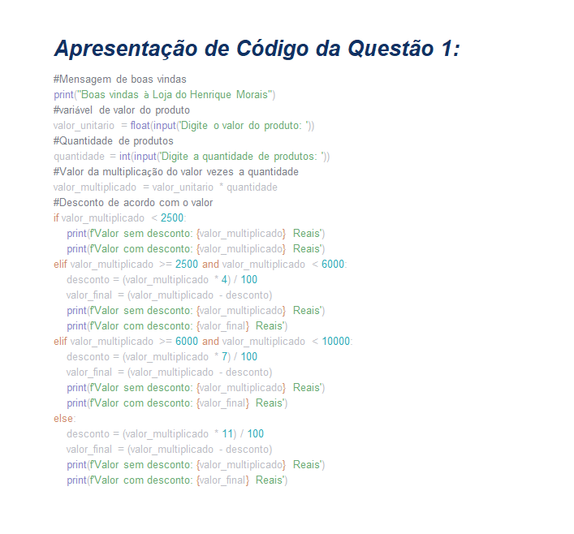
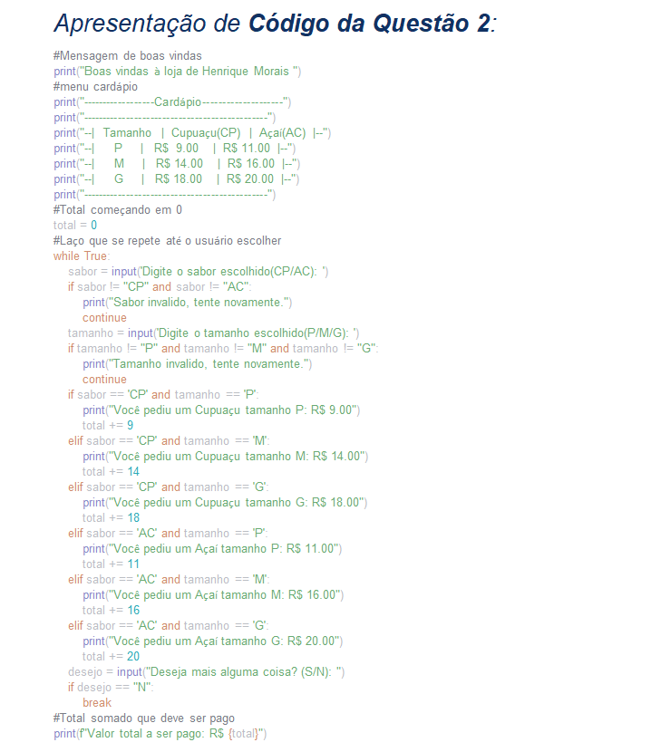

Portfólio
Projetos Desenvolvidos
Desenvolvi um site quando tinha 14 anos usando o Wordpress, eu ainda não tinha conhecimento em programação, então desenvolvi utilizando o Elementor e um Tema Particular, hoje o site não está mais no ar pois paramos de pagar a mensalidade
Alguns anos atrás fiz um site bem básico para meu pai usar para a loja de material de construção, utilizei também o wordpress, mas usando apenas os recursos do elementor, www.construmic.com.br, o site ainda está no ar, mas há tempos não atualizamos com novas informações ou tentamos deixar mais bonito, mas ainda pretendo dar uma melhorada.
Exemplos de Trabalho
Durante o curso fizemos alguns trabalhos, como por exemplo o MER, Modelo Entidade Relacionamento, na disciplina de banco de dados, aqui está uma imagem da versão final do meu MER:
Fizemos também alguns códigos utilizando Python para um trabalho que pedia alguns exercícios
 